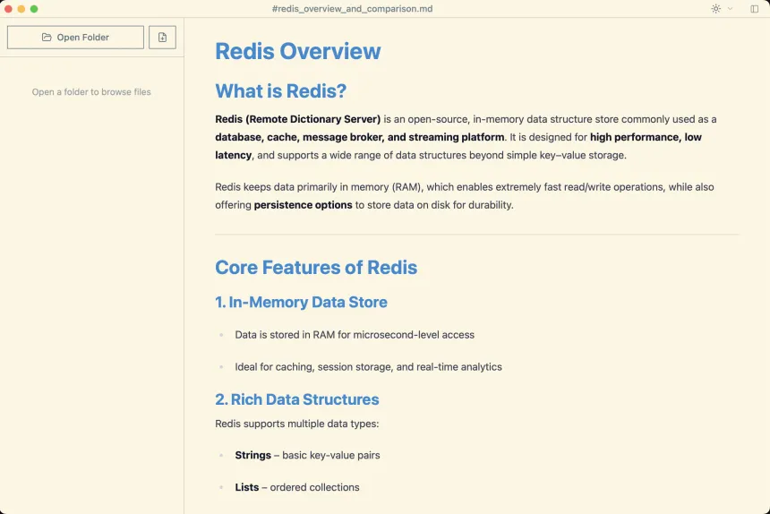

Turn any document into
clean, editable Markdown
Import Word files, spreadsheets, PDFs, and presentations in one click, then write and edit with a live visual preview. Free, offline, open source.

Import from any format
Pourdown converts your existing documents to Markdown before you edit — preserving structure while cutting token cost by up to 96% vs raw PDF.
| Format | What's preserved | Known limitations |
|---|---|---|
| Word .docx | Headings, bold/italic/strikethrough, nested lists, tables, hyperlinks | Images skipped; tracked changes dropped; TOC placeholder inserted |
| Excel .xlsx / .ods | Each sheet → GFM table section; dates formatted as ISO | Capped at 500 rows per sheet |
| Headings inferred from font size; paragraphs sorted top-to-bottom | Text-only PDFs; scanned / image PDFs not supported | |
| PowerPoint .pptx | Slide titles → # headings; body text → paragraphs |
Images and animations not captured |
Everything you need to write in Markdown
Visual Editing
Write without raw Markdown symbols using the WYSIWYG editor powered by Tiptap.
Source Mode
Toggle to raw Markdown text at any time — full control when you need it.
Find & Replace
In-document search with replace and cross-file search in the sidebar.
Auto-save
Your work is saved automatically at regular intervals — no lost edits.
Seven Themes
GitHub Light/Dark, Dracula, Nord, and Solarized — pick your look.
i18n
English and Traditional Chinese interface out of the box.